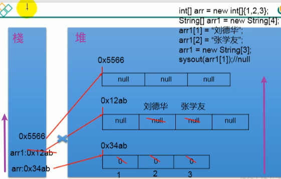
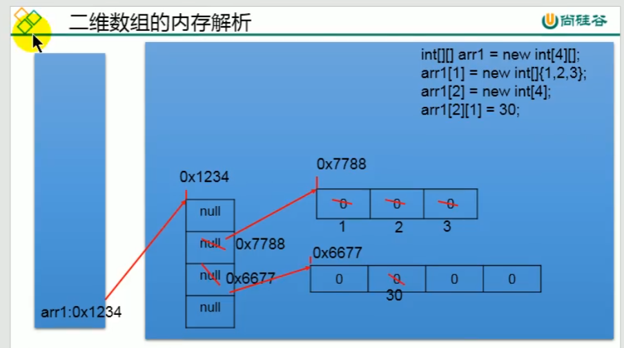
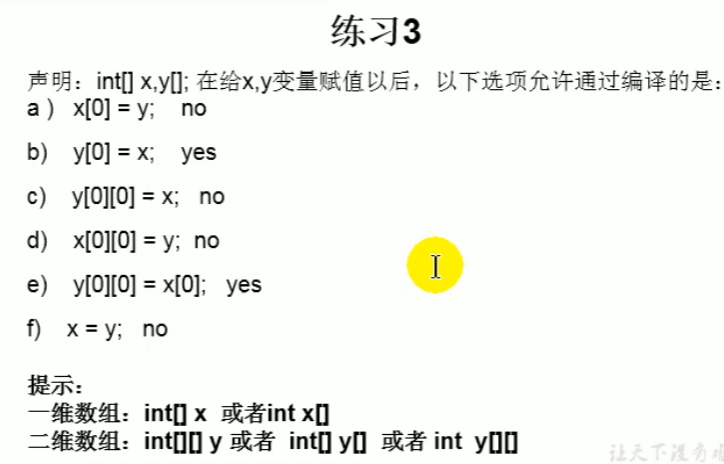

數組Array
尚硅谷JavaSE筆記-06
數組Array
多個相同類型的數據按一定的順序排列的集合
結構
- 數組名
- 元素
- 下標aka角標/索引
- 長度(元素的個數)
特性
- 數組本身是引用數據類型，其中的元素可以是任何類型
- 數組的排列是有序的
- 在記憶體中開闢一整塊連續的空間，數組名引用的是這塊連續空間的首地址
- 長度確定後就不可更改
聲明與初始化
數組必須初始化才能使用
- 方法1-靜態初始化，創建時填入已知的元素內容，由系統判定長度
int[] array1; // 聲明
array1 = new int[]{1, 2, 3}; // 靜態初始化:同時對元素賦值了
// 也可以合併成
int[] array1 = new int[]{1, 2, 3};
// 可以再縮寫成 (類型推斷)
int[] array1 = {1, 2, 3};
- 方法2-動態初始化，創建時填入已知的長度，元素內容為0或空(系統預設，後述)
int[] array3 = new int[3]; // 動態初始化，注意後面的[5]是指長度
訪問數組內的元素
沒特別的，一樣從0~長度-1。長度=array.length
舉例:array[0]、array[1]…array[array.length-1]
遍歷
直接
[I@1b6d3586這樣的一個地址
for (int i = 0; i < array.length; i++) {
System.out.println(array[i]);
}
以上可用foreach縮寫
for (int j : array) {
System.out.println(j);
}
// 這是JAVA5後增加的foreach寫法，用在不管下標，專門只遍歷的情境，格式為
for(元素的數據類型 變量 : Collection集合or數組){
}
各種元素的系統預設值
剛剛提到動態初始化時，只定了長度，元素內容由系統賦予預設值
- 整型(byte、short、int)為
0 - 浮點數為
0.0 - char為
\u0000(ASCII碼的null)，不是'0'也不是空格(空格的編號是\u0020)，就顯示為空，要注意 boolean為false- 引用數據類型則為
null，就是空
一維數組在記憶體中的情況
比較複雜，引用課堂的截圖

- 棧裡面放局部變量
- 堆裡面放
new出來的東西 - 這張圖是簡單表示執行右上角的程式碼時記憶體中發生的事
- 有瑕疵，因為
string也是引用類型，那個劉德華、張學友其實不是那樣
練習題-學生成績分級
輸入學生人數與成績，找出最高分，並依照最高分-10以內為A級、-20為B、-30為C、其餘不及格
Scanner scan = new Scanner(System.in);
System.out.println("輸入學生人數<數字正整數>...");
int stuNum = scan.nextInt();
int[] stuScore = new int[stuNum];
int maxScore = 0;
for (int i = 0; i < stuNum; i++) {
System.out.println("輸入學生編號" + (i + 1) + "的成績<數字正整數>...");
stuScore[i] = scan.nextInt();
if (stuScore[i] > maxScore) {
maxScore = stuScore[i];
}
}
System.out.println("成績登記完畢，最高分為" + maxScore);
for (int i = 0; i < stuNum; i++) {
if ((maxScore - stuScore[i]) <= 10) {
System.out.println("學生編號" + (i + 1) + "的成績為A等級");
} else if ((maxScore - stuScore[i]) <= 20) {
System.out.println("學生編號" + (i + 1) + "的成績為B等級");
} else if ((maxScore - stuScore[i]) <= 30) {
System.out.println("學生編號" + (i + 1) + "的成績為C等級");
} else {
System.out.println("學生編號" + (i + 1) + "的成績不及格");
}
}
二維數組
聲明
// 靜態初始
int[][] arr1 = new int[][]{{1, 2}, {3, 4, 5}, {6}};
// 靜態+類型推斷
int[][] arr2 = {{1, 2}, {3, 4, 5}, {6}};
// 動態初始1
String[][] arr3 = new String[4][5]; //相當於一個4X5的表格
// 動態初始2
String[][] arr4 = new String[3][]; // 已知行，省略列。反之報錯
String[][][] arr6 = new String[3][][]; //相當於3X?X?的表格，總之第一個[](外層元素)必須指定長度
// 也正確的寫法，容易混淆不建議
int[] arr5[] = {{1, 2}, {3, 4, 5}, {6}};
遍歷
int[][] arr = {{1, 2, 3}, {4, 5}};
for (int i = 0; i < arr.length; i++) {
for (int j = 0; j < arr[i].length; j++) {
System.out.print(arr[i][j]);
}
System.out.println();
}
記憶體解析
int[][] arr = new int[3][4];
System.out.println(arr);
// [[I@1b6d3586，[[表示二維數組
System.out.println(arr[0]);
// 得到[I@4554617c，[表示一維數組，I表示類型是int，@地址位置
int[][] arr2 = new int[3][];
System.out.println(arr2[0]); // 得到null

-
外層元素在棧，也是外層元素(第一個[])必須指定長度的原因
練習題-二維數組邏輯判斷

上次修改於 2021-11-21